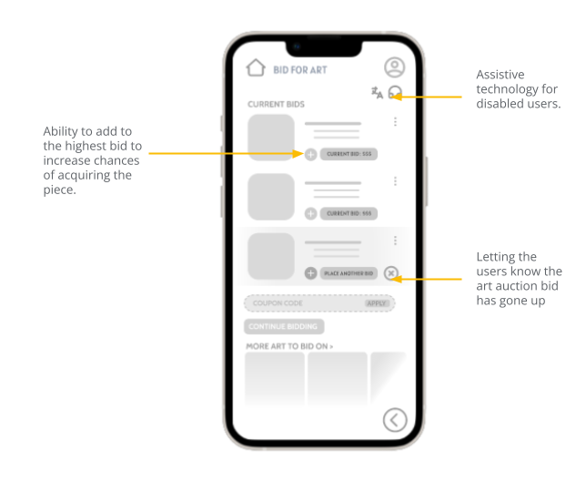
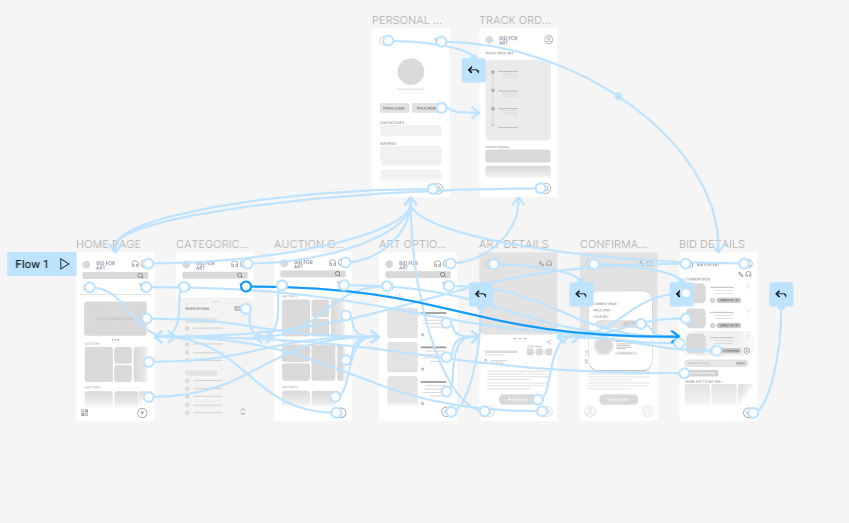
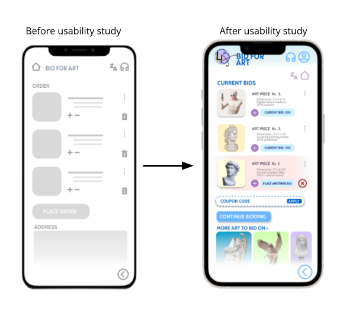
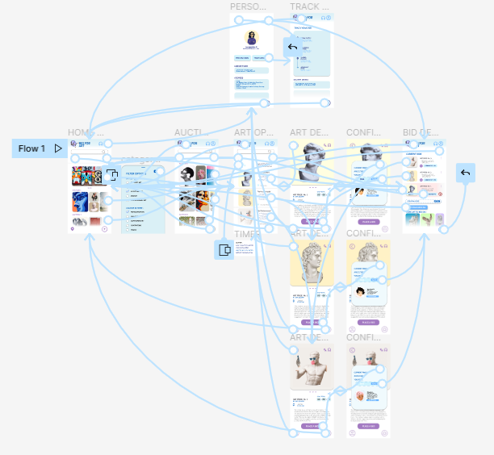

The Product
Bid for Art aims to serve as a medium that allows people to bid on art without being present at the gallery. The art is categorized into different categories into its specific style. The app also allows personalisation of your preferred art styles to help you with your bid. This application also serves as a method for art lovers to continue visiting auctions during a pandemic or other regulations set by their respective governments.
The problem:
Art Auctions are time-consuming and not convenient for people with tight schedules. It is also hard to navigate for a novice.
The goal:
To determine the difficulties a user encounters during art auctions and attending auctions and figure out the specific challenges users face when they try to place bids and successfully attain the art of their choice.
User research: summary
I conducted interviews and created empathy maps to understand the users I'm
designing for and their needs. A primary user group identified through research were people who were in need of art for design purposes or for diversifying their financial portfolios.
This user group confirmed initial assumptions about the Bid for Art users, but research
also revealed that travelling to the gallery and lack of knowledge of the art acquirers' esthetic taste was also user problems.
Time: Many working adults are too busy to spend time on gallery visits and sitting through art auctions.
Accessibility: Platforms for online art auctions are not equipped with assistive technologies or provide the any information about the art in the auctions.
User Experience: Many platforms do not give the user the option for customization or any other services.
Persona
Problem statement:
Aditi is an overworked architect who requires a method to obtain licenced art from art galleries without spending excessive time traveling or bidding.
"Art in an environment helps liven up a certain space and enhances its aesthetic.”
Who Is She ?
Aditi is an architect who works in a firm in the center of a metropolitan city. She has a very erratic schedule and often works on multiple projects simultaneously. She is linguistically challenged and often finds it hard to communicate with many local artists and colleges. This app will help her save time and energy as she would not have to travel to art galleries for art physically. However, many apps do not have adequate translation software for all languages.
Needs Addressed by the App
To acquire pieces of art as efficiently as possible. To match art work with a clients preferences. To minimize time spent on physically going to galleries and looking for suitable art.
Pain points in exsisting apps
Art galleries in different countries are not accessible. It does not accommodate people who are colour blind. Delivery service is not reliant.
Paper Wireframes
Taking the time to draft iterations of each screen of the app on paper ensured that the elements that made it to digital wireframes would be well-suited to address user pain points. I prioritized a filter process to help users find what they are looking for with ease. I also added multiple thumbnail examples of art in the auction options to give the user and idea of the theme of the auction.
Prototypes and Mockups
Digital Prototypes
The ability to conduct multiple functions and get the most information for one page was an important user need to address in the designs and equipping the app to work with assistive technologies.
Low Fidelity Prototype
The low fidelity prototype created was created on the Figma app.
Using the completed set of digital wireframes, I created a low-fidelity prototype. The primary user flow I connected was selecting the auction and bidding on art, so the prototype could be used in a usability study.
Link To Lo-Fi Prototype »Mockups
The mockups are a revised version of the low fidelity prototype with colour and images.
Early designs allowed for some customization, but after the usability studies, I added additional options to increase the bid from the current bid page (previously the orders page). I also revised the design so users see the bids they were no longer the top bid on and the more like options.
High-Fidelity Prototype
The high fidelity prototype is accopanied by interactivity added in by Figma.
The final high-fidelity prototype presented cleaner user flows for the whole art bidding process. It also met user needs for a confirmation page, a more like art suggestion area and the to increase their bid from the bid details page.
Link To Hi-Fi Prototype »Usability study: findings
I conducted two rounds of usability studies. Findings from the studies helped guide the designs from wireframes to mockups.
Round 1 findings
Bidding Machanism
Users wanted an increment button next to the highest bid to help make a bid on the art page.
Round 2 findings
Mockup Frames
Additional Research
-
Accessibility Considerations:
Provided access to users who are vision impaired through adding screen reader option. Used icons to help make navigation easier. Used a translation option for users speaking different languages and a timer option to help users bid on auctions about to expire.
-
Impact made by the app:
The app makes users feel fulfilled with the time they spend on the app and excited to find more art of their aesthetics.
-
What I learned:
While designing the Bid for Art app, I learned that the first ideas for the app are only the beginning of the process. Usability studies and peer feedback influenced each iteration of the app's designs.
-
Next steps for the project:
Conduct another round of usability studies to validate whether the pain points users experienced have been effectively addressed. Get the opinion of specialists and art galleries to make the app more accessible for art galleries to connect with. Conduct more user research to determine any new areas of need.